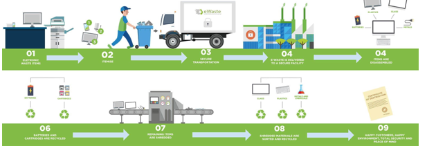

Electronic waste, as known as e-waste, is generated when any electronic or electrical equipment becomes unfit for the intended use or if it has crossed its expiry date. People tend to switch to the newer models and trending technologies; also, the lives of products get reduced with time. But the issue is left with e-waste management and its challenges. E-waste poses the huge risk to humans, animals, and the environment. E-waste typically consists of plastics, metals, cathode ray tubes (CRTs), printed cables, circuit boards, and so on. The presence of toxic substances like liquid crystal, lithium, mercury, nickel, selenium, polychlorinated biphenyls (PCBs), arsenic, barium, brominates flame retardants, cadmium, chrome, cobalt, copper, and lead makes it very hazardous.
According to the UN, in 2021 each person on the planet will produce on average 7.6 kg of e-waste, meaning that a massive 57.4 million tons will be generated worldwide. Only 17.4% of this electronic waste, containing a mixture of harmful substances and precious materials, will be recorded as being properly collected, treated and recycled.
An informal e-waste recycling sector employs thousands of households in urban areas to collect, sort, repair, refurbish, and dismantle disused electrical and electronic products.
E-waste can be toxic, is not biodegradable and accumulates in the environment, in the soil, air, water and living things. For example, open-air burning and acid baths being used to recover valuable materials from electronic components release toxic materials leaching into the environment. These practices can also expose workers to high levels of contaminants such as lead, mercury, beryllium, thallium, cadmium and arsenic, and also brominated flame retardants (BFRs) and polychlorinated biphenyls, which can lead to irreversible health effects, including cancers, miscarriages, neurological damage and diminished IQs.
It is also worth considering the effects electronic goods have on climate change. Every device ever produced has a carbon footprint and is contributing to human-made global warming.
Manufacture a tonne of laptops and potentially 10 tonnes of CO2 are emitted. When the carbon dioxide released over a device’s lifetime is considered, it predominantly occurs during production, before consumers buy a product. This makes lower carbon processes and inputs at the manufacturing stage (such as use recycled raw materials) and product lifetime key determinants of overall environmental impact.
Steps to create a robust e-waste management; strengthen the informal sector, policy instruments under EPR, regulatory enforcement, e-waste imports, public awareness for e-waste management.
It refers to the reprocessing and re-use of these electronic wastes. It is a process that seeks to recover material from electronic waste. E-waste recycling is one of the most talked-about issues in the world today due to its potentials to reduce environmental hazards and pollution. There is also the fact that it can protect our lives as humans and other life forms existing in our world. The components of e-waste that can be recycled are; plastic, metal, glass, mercury, circuit boards, hard disk, toner and ink cartridges, batteries.
It refers to the reprocessing and re-use of these electronic wastes. It is a process that seeks to recover material from electronic waste. E-waste recycling is one of the most talked-about issues in the world today due to its potentials to reduce environmental hazards and pollution. There is also the fact that it can protect our lives as humans and other life forms existing in our world. The components of e-waste that can be recycled are; plastic, metal, glass, mercury, circuit boards, hard disk, toner and ink cartridges, batteries.